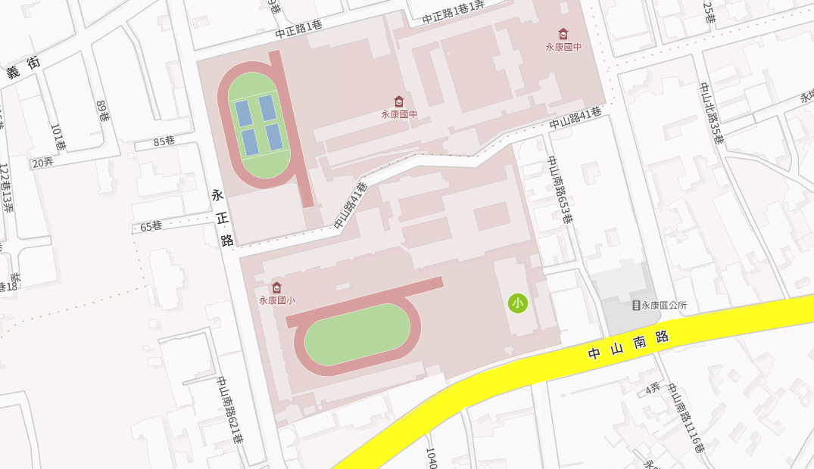
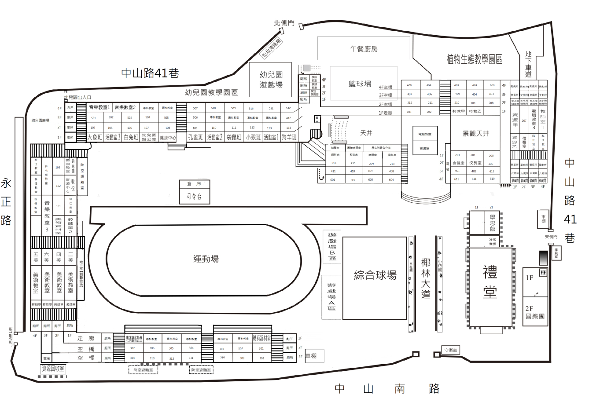
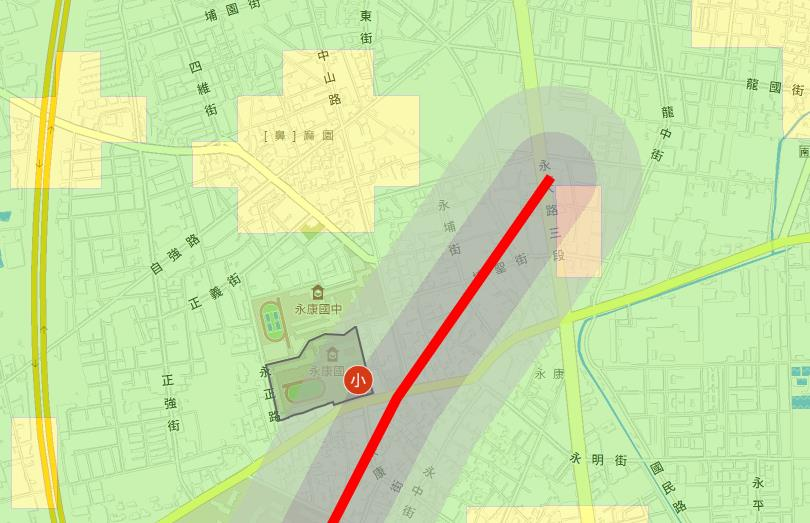
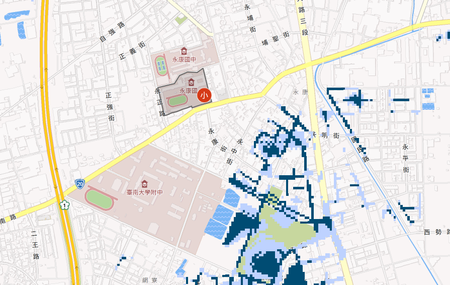
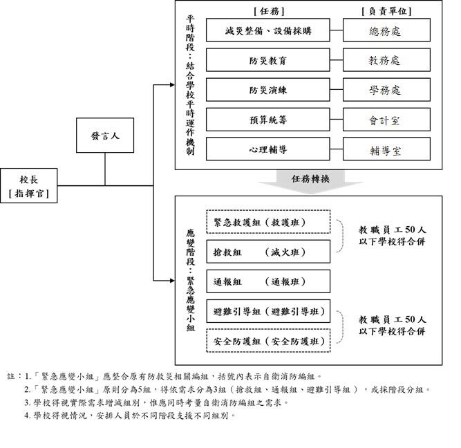
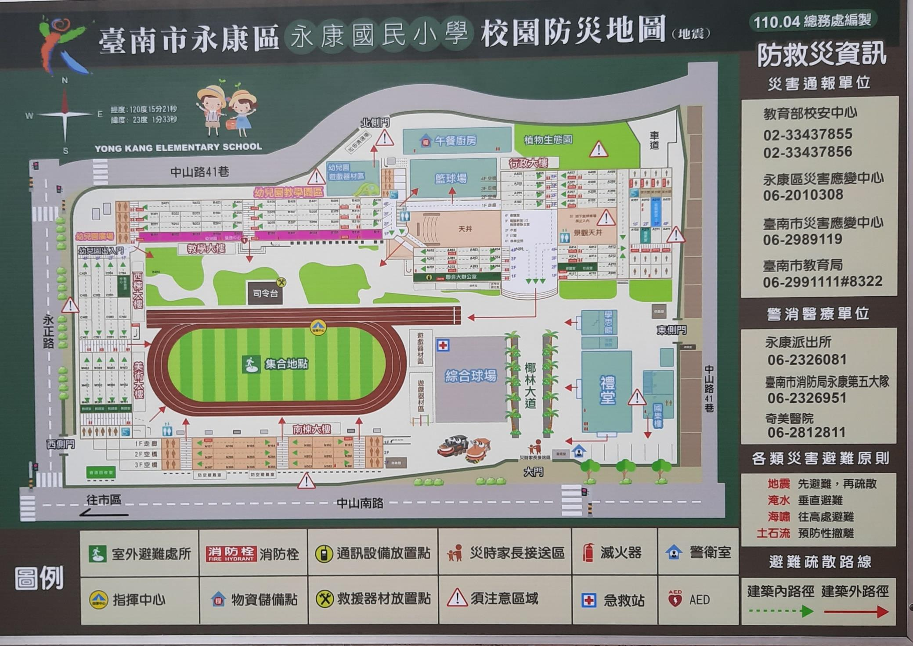
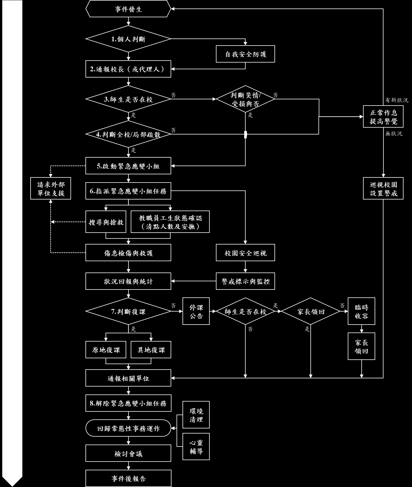
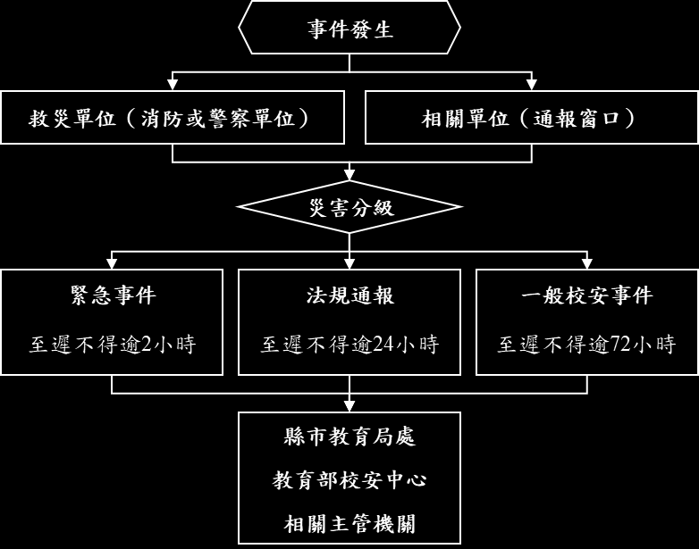
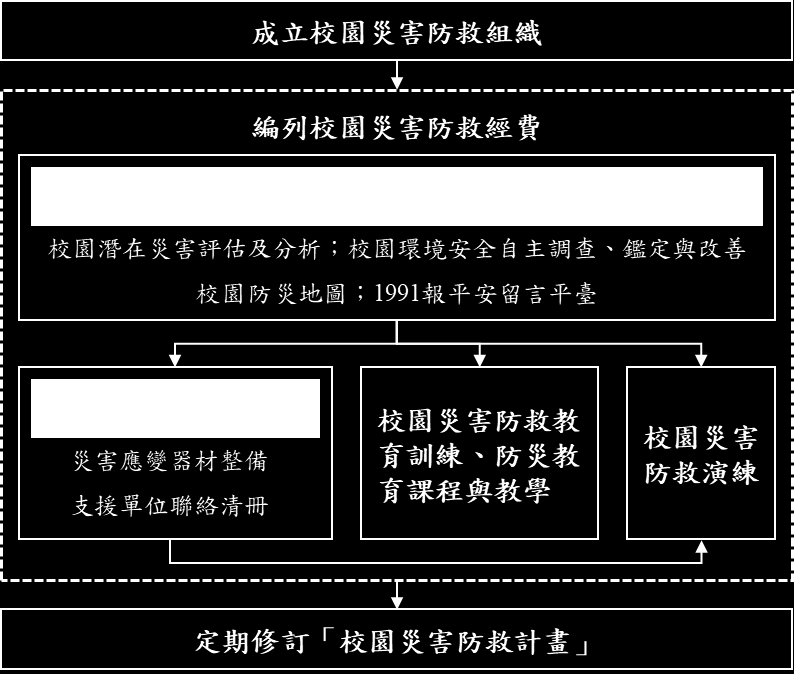
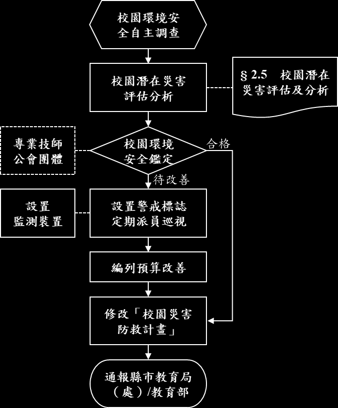

開啟原始防災計畫書（PDF） 開啟互動式 3D 防災地圖 ↗
臺南市永康區永康國民小學・校園災害防救計畫書（版本 3｜112.02.10 修訂）學校地址：710 臺南市永康區永康里中山南路 637 號（經度 120°15'21"｜緯度 23°1'33"）｜最後安檢與修訂日：中華民國 112 年 02 月 10 日

點圖片可放大。學校南臨中山南路、西臨永正路、北及東臨中山路41巷，距永康派出所僅 0.2 公里（1分鐘）、永康消防分隊 0.5 公里（2分鐘）。

點圖片可放大。詳列行政大樓、教學大樓、美術與西棟大樓、南棟大樓、禮堂、學思館、國樂大樓及午餐廚房各層空間配置。

點圖片可放大（瀏覽日期：110.01.02）。永康國小鄰近後甲里斷層／永康斷層敏感帶，地震列為本校第一優先防範災害。

點圖片可放大（瀏覽日期：109.01.02）。短延時強降雨時周邊道路有積淹水可能，需落實排水溝清淤與垂直避難整備。
| 發生日期 | 災害類型 | 發生地點 | 事件概述与受災情形 | 人員傷亡 | 處置與復原情形 |
|---|---|---|---|---|---|
| 2005/10/21 | 人為／工程災害 | 校內（鄰近永康國中） | 永康國中 PU 跑道施工導致有毒氣體外洩並隨風飄散至本校校內。 | 0 人 | 立即疏散受影響區域師生至上風處並通報環保與教育單位。 |
| 2009/08/05 | 風災（莫拉克颱風） | 禮堂 | 莫拉克颱風強風豪雨造成禮堂部分設施受損。 | 0 人 | 災後封鎖現場並辦理災損搶修復原工程。 |
| 2016/09 | 風災（莫蘭蒂、梅姬颱風） | 校內各區 | 禮堂天花板掉落、校內兩棵榕樹傾倒、頂樓大門毀損、美術大樓漏水、飲水機倒塌、大門柵欄機損壞。 | 0 人 | 啟動開口契約與災後復原經費，完成樹木扶正清運、天花板與大門柵欄修復。 |
資料來源：計畫書第 38 頁「表 2.5 災害事件紀錄」。近五年內無重大人員傷亡事件。
全校班級總數：國小一般班級 87 班 ｜ 幼兒園 6 班 ｜ 特教班 1 班＋3 巡迴班

點圖片可放大。平時為「校園災害防救委員會」，災時立即轉換為「校園災害緊急應變小組」。
| 工作事項 | 主責單位 | 協助單位 |
|---|---|---|
| 1. 各處室權責分工、監督執行與建立自評機制 | 校長 | 各處室 |
| 2. 危機處理小組與發言人機制運作 | 學務處 | 教務處 |
| 3. 災害防救減災與整備工作、防救災設備採購建置 | 總務處 | 學務處 |
| 4. 災害防救教育課程規劃、宣導活動與研習辦理 | 教務處 | 學務處 |
| 5. 校園災害防救演練規劃、執行與檢討 | 學務處 | 總務處 |
| 6. 經費預算統籌編列與支應 | 總務處 | 會計室 |
| 7. 災後師生心理諮商與輔導追蹤 | 輔導室 | 學務處 |
| 組別 | 組內職務 | 職稱與姓名 | 平時所在建築／樓層 | 災時負責工作項目 |
|---|
資料來源：計畫書第 41～45 頁「表 2.7.1 緊急應變小組編組名冊」。考量學校人力，部分人員因專長跨組支援。
資料來源：永康國小 112 年校園災害防救計畫書第四章「災害應變」（第 58～62 頁，圖 4.1 校園災害應變流程圖及各組作業規範）。
可在下方預覽中直接拖曳、縮放、切換「校園 3D / 行政大樓 3D / 平面配置圖」與定位各防災設施；也可另開完整視窗操作。

點圖片可放大（110.04 總務處編製，2079×1472 高解析度）。完整標示室外避難處所（運動場）、指揮中心（司令台前）、急救站（綜合球場）、健康中心与 AED（教學大樓1F）、物資儲備點（午餐廚房）、通訊設備放置點（聯合大辦公室）、救援器材放置點（司令台後）、警衛室、災時家長接送區（大門椰林大道）及 7 處須注意區域。

點圖片可放大。涵蓋階段一（災害發生初期）、階段二（啟動應變組織、疏散、搶救、救護、巡查、接送與收容）、階段三（復原階段）。

點圖片可放大。明定教育部校安中心、臺南市政府教育局（學輔校安科）、臺南市災害應變中心及永康區災害應變中心雙向通報機制。
點選上方任一建築物卡片，即可檢視該棟建築之結構安全檢查紀錄、耐震補強歷程、避難設備（緩降機、避難滑梯、無障礙斜坡道）與全部樓層平面圖（點擊圖片可全螢幕放大）。

點圖片可放大。包含校園環境安全改善、防災教育課程與宣導、防救災演練、應變器材整備及外部支援協定。

點圖片可放大。每學期開學前定期執行校舍結構、非結構物（書櫃、燈具、女兒牆）、電力與消防系統安全檢核。
本校於 112 年 2 月 10 日完成全校六大類、共 31 項災害應變器材全面檢核。其中 30 項均已完備並定期維護；針對檢核發現之待補強項目，已納入本年度預算辦理採購改善：
| 檢核項目類別 | 現況與改善補強說明 | 負責單位／狀態 |
|---|---|---|
| 【待補強項目】安全管制用工具：夜間警示燈 | 目前數量 0 組。為強化夜間或停電期間校園危險區域警戒與封鎖線辨識度，已列為本年度預算優先採購補強項目。 | 學務處／總務處（本年度預算採購） |
| 校舍結構耐震補強工程 | 南棟大樓（107年6月完工）、學思館（108年4月完工）、西棟大樓（108年5月完工）、美術大樓（110年7月完工）均已完成耐震補強；全校 7 棟建物於 112.02.05 安檢全數合格。 | 總務處（已完成並定期安檢） |
| 高樓層避難與無障礙逃生設備 | 全校配置緩降機共 22 具（行政12、教學6、美術3、學思館1）、避難滑梯 2 座（行政大樓）、無障礙斜坡道 8 座（各棟均備）、緊急照明燈 173 組、ABC 滅火器 101 支。 | 總務處 林政賢組長（已完備） |
| 健康中心緊急救護與防疫儲備 | 健康中心外配置 AED 1 組，中心內備有急救箱、氧氣瓶、長背板加頭部固定器擔架、骨折固定板、緊急輪椅 2 部、額耳溫槍 80 支、醫用口罩 10,000 個、酒精 60 瓶、消毒水 10 桶。 | 健康中心 黃秀惠護理師（已完備） |
| 器材類別 | 器材名稱 | 數量與單位 | 存放位置 | 保管／負責人 | 檢核狀態与備註 |
|---|
資料來源：計畫書第 51～52 頁「表 3.1 災害應變器材整備表」。防災避難箱統一放置於司令台後儲藏間。
| 單位名稱 | 聯絡電話 | 距離／預估抵達 |
|---|---|---|
| 永康分局永康派出所 | 06-2326081 | 0.2 km（約 1 分鐘） |
| 消防局第五大隊永康分隊 | 06-2326951 | 0.5 km（約 2 分鐘） |
| 奇美醫療財團法人奇美醫院 | 06-2812811 | 4.3 km（約 20 分鐘） |
| 高雄榮總臺南分院 | 06-3125101 | 4.7 km（約 13 分鐘） |
| 國立成功大學醫學院附設醫院 | 06-2353535 | 5.2 km（約 17 分鐘） |
| 永康區災害應變中心（民政課） | 06-2010308#9 | 區級應變指揮 |
| 臺南市災害應變中心／消防局 | 06-2989119／2975119 | 市級應變指揮 |
| 教育部校安中心 | 02-33437822／33437855 | 中央校安通報 |
| 臺南市政府教育局（學輔校安科） | 06-2991111#8322 | 主管機關通報 |
| 永康里辦公處（魏萬順里長） | 06-2034102／0933-355705 | 社區聯防支援 |
| 家長會長 黃孟隆／7-11緊急飲食 陳志成 | 0927-173966／0931-792741 | 家長會與緊急物資 |
| 自來水永康服務所／台電搶修／大台南瓦斯 | 06-2325714／0800-222839／06-3136826 | 維生管線搶修 |
| 機構名稱／復原項目 | 聯絡電話／執行內容 |
|---|---|
| 教育部學生輔導諮商中心（溪南區-台南一中） | 06-2371206#705（專案心理諮商轉介） |
| 臺南市政府教育局學生輔導諮商中心 | 06-2521083（駐區專業輔導人員支援） |
| 國立臺南大學輔導中心／杏樸身心健康關懷協會 | 06-2133111#691／06-2643158 |
| 寬欣心理治療所（鄭皓仁院長）／慈恩心理治療所（邱似齡院長） | 06-2510966／0968-025220 |
| 生命線協談專線／張老師專線 | 1995／1980（24小時心理支持） |
| 環境衛生與防疫消毒（第五章 5.2） | 由總務處與體衛組會同環保局（06-2686751）、衛生局（06-2679751）執行災後校園積水清除、漂白水消毒與飲水機水質檢驗。 |
| 供水供電緊急處理与復課補課（第五章 5.2） | 發電機優先供應指揮與通訊；教務處依受災停課天數擬定彈性補課計畫，確保學生受教權益。 |
如需查閱原始計畫書、高解析度防災地圖或政府防救災公開資訊平台（表 2.4），可點選下列連結。